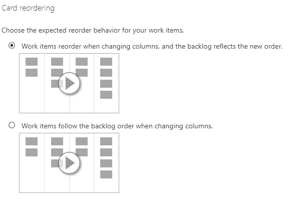

Azure DevOps Card Reordering
Azure DevOps Boards'da kartların sırasını değiştirmek için aşağıdaki adımları izleyebilirsiniz:
- Azure DevOps Boards projesine gidin ve istediğiniz tahtayı seçin.
- Sırasını değiştirmek istediğiniz kartı bulun.
- Fare imlecinizi kartın üzerine getirin ve kartın sol tarafında üç yatay çizgiyle temsil edilen bir sıra düzenleme simgesi görmeniz gerekmektedir.
- Kartın sıra düzenleme simgesini tıklayın ve basılı tutun.
- Fare düğmesini basılı tutarak kartı tahtadaki istediğiniz konuma sürükleyin.
- Kartı yeni konumuna bırakmak için fare düğmesini serbest bırakın.
- Kart şimdi bıraktığınız konuma göre yeniden sıralanacaktır.
